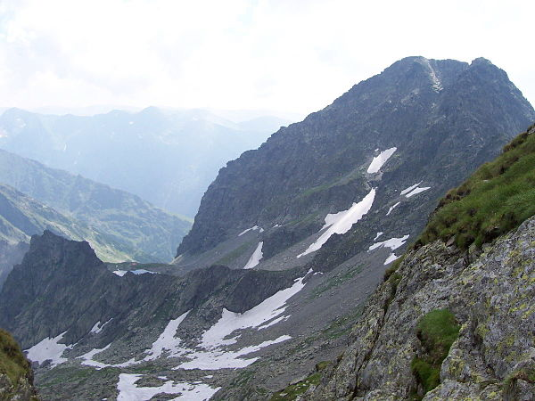

303,000
Vizită
250,000
Hectare Pădure
50%
Gardă Forestieră
Diagrame
 Carpații românești ·Vizită Aceasta Site
Carpații românești ·Vizită Aceasta Site
303,000
Vizită
250,000
Hectare Pădure
50%
Gardă Forestieră
Diagrame
| Descriere Parcul | |
|---|---|
| Nume de Parc | Cǎlțun |
| Galerie |  |
| Localizare | Al Centru |
| Altitudinea | 2.505 Metri |
| Accesibilitate | Moderat |
| Orar | 8 - 20 |
| Descriere Lungă | Considerat uneori un vârf dublu împreună cu vârful Lespezi, având altitudinea de 2.505 metri. Este recunoscut prin masivitatea sa vizibilă cu precădere dinspre partea nordică. La poalele sale se află lacul glaciar Călțun, precum și refugiul montan omonim, ridicat de divizia de Salvamont din Avrig, județul Sibiu. |